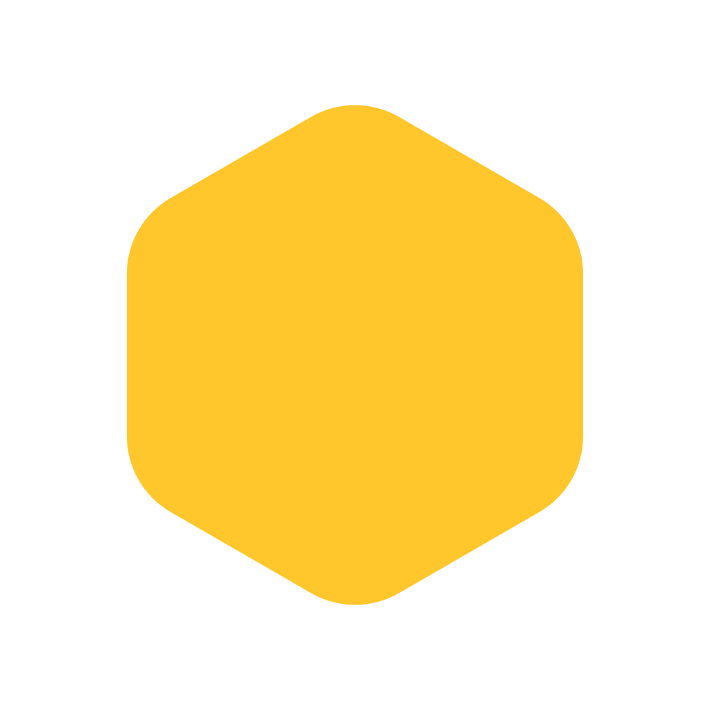
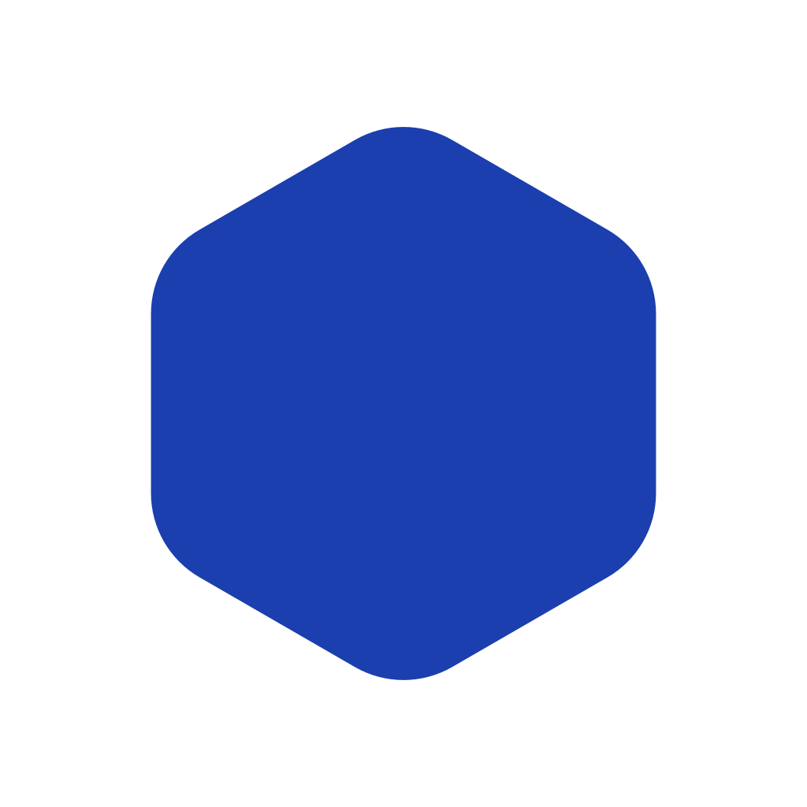
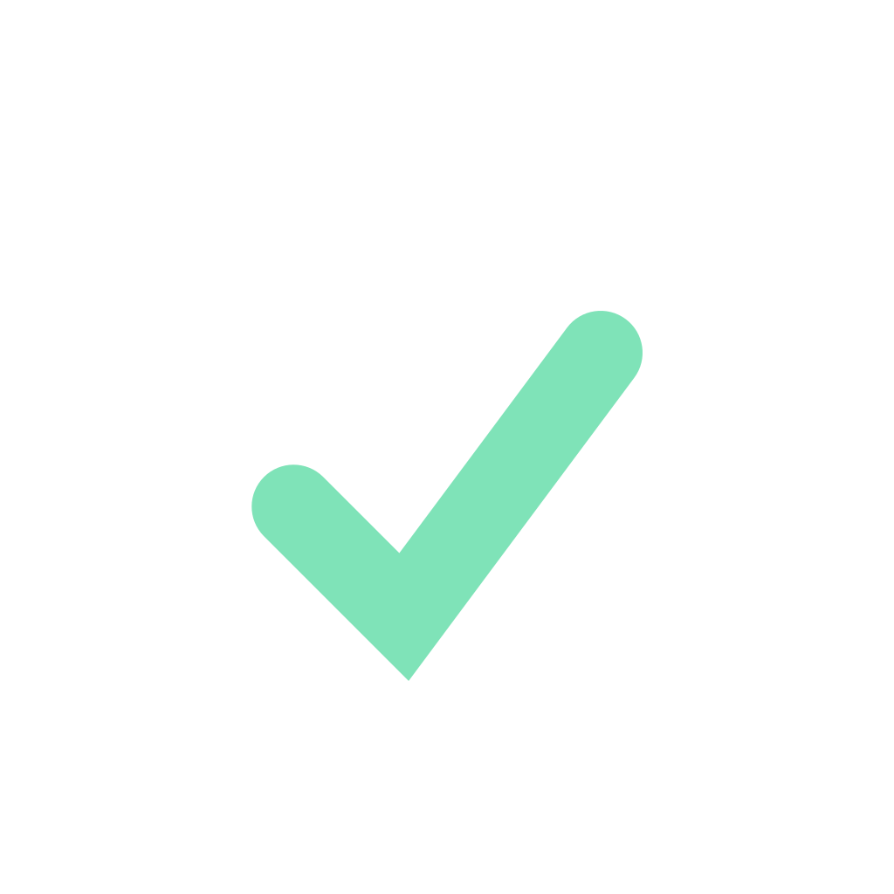
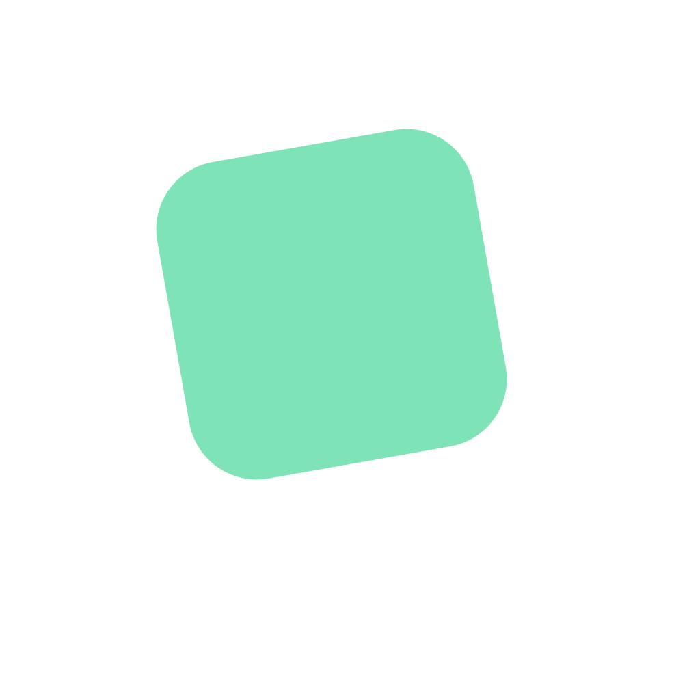

Hier siehst du 16 Ideen für das App-Icon, halb aus Hex Weich (3b), halb aus Frische (5), zwei verbinden beide. Die drei Favoriten gibt es als echte Ebenen: für Icon Composer (Liquid Glass auf iPhone, iPad und Mac), für die Apple Vision Pro und als adaptives Android-Icon mit Monochrom-Ebene.
Peter's favorites in original 5 colors
Peters Favoriten in den Originalfarben von 5
Die drei Favoriten in derselben Form, Ebene für Ebene, nur in den Farben, mit denen Frische (5) gestartet ist: Kobalt #1b3fae als Fläche, Zitrone #ffe24a und Weiß darauf, wie die Frische-Marke. Nachts tiefes Navy #0b1024 mit Zitrone #e8cb3c. Die Nähe zu Lidl ist ausdrücklich in Ordnung. Tomate bleibt draußen: neben Kobalt und Zitrone kommt sie nicht auf 3:1.
Wähle oben in jeder Zeile die Darstellung, beide Icons wechseln mit. Klar und getönt rechnet das System aus der einfarbigen Form, darum sehen Neu und Original dort gleich aus. Daneben der visionOS-Stapel, die vier Android-Masken und das thematische Symbol.
5 · Wabenstapel in den Originalfarben von 5
Zitronenring auf Kobalt, darin die weiße Wabe mit dem Kobalt-Haken: genau die drei Farben der Frische-Marke. Die Ebenen bleiben die Idee: Ring, Wabe und Haken bekommen in Glas und visionOS je ihre eigene Tiefe.
Bei 29 pt und 48 dp liest sich der Haken klar. Bei 16 px bleibt ein Zitronenring mit weißem Kern und blauem Punkt, heller und lauter als das Original auf Violett.
Die Zitronenkachel hinten, die weiße vorn, beide auf dem Kobaltblock der Frische-Startseite. Auf Kobalt statt Navy wird das Icon lauter und eindeutig Frische.
Bei 29 pt und 48 dp sind beide Kacheln und der Haken da. Bei 16 px bleibt eine weiße Kachel mit gelber Ecke auf Kobalt, der Haken wird zum Strich; die gelbe Ecke trägt mehr als die Mint-Ecke des Originals.
Jede Kachel zeigt das Icon groß in hell, klein in dunkel und in echten 29 und 16 Pixeln. Bei 16 px entscheidet sich, ob man es auf dem Home-Bildschirm und in den Einstellungen noch erkennt.
Wabe mit Haken3b Hex Weich Die 3b-Wabe als Fläche, ein Haken für die erledigte Liste.
Waben-H3b Hex Weich Das H von Hummlist in einer Honigwabe auf Wabenmuster.
Wabenliste3b Hex Weich Die Einkaufsliste in der Wabe: ein Haken, zwei offene Zeilen.
Streifenwabe3b Hex Weich Zwei Honigstreifen auf Tinte: Hummel ohne Figur.
Wabenstapel3b Hex Weich Drei Ebenen ineinander: gemacht für Glas und visionOS-Tiefe.
Sprechwabe3b Hex Weich Wabe als Sprechblase: Siri und Alexa schreiben mit.
Drei Waben3b Hex Weich Ein kleiner Wabenverbund, eine Zelle ist abgehakt.
Flugbahn3b Hex Weich Die gepunktete Flugbahn aus 3b landet in der Wabe.
Mint-Block5 Frische Frische auf das Nötigste: ein Farbblock, ein Haken.
Zettel5 Frische Der Einkaufszettel, schräg auf Mint, mit Kobalt-Haken.
Block-H5 Frische Das H aus zwei Farbblöcken, wie die Kacheln von Frische.
Sprechblase5 Frische Kobalt-Blase auf Mint: Sag es, es steht auf der Liste.
Kachelstapel5 Frische Zwei gekippte Kacheln übereinander: zwei Leute, eine Liste.
Frische Wabe3b × 5 Die Verbindung von 3b und 5: Kobalt-Wabe auf Mint, der Haken ausgestanzt.
Doppelhaken5 Frische Zwei Haken versetzt: ihr hakt gemeinsam ab.
Frische H-Wabe3b × 5 Mint-Wabe mit Navy-H auf Kobalt: die Verbindung, als Monogramm.
Favorit 1: 5 · Wabenstapel
Drei Ebenen ineinander: gemacht für Glas und visionOS-Tiefe.
Die einzige Variante, deren Ebenen schon die Idee sind: außen die Honigwabe, innen die helle Wabe mit dem Haken. Auf Liquid Glass und in visionOS bekommt jede Ebene ihre eigene Tiefe. Das Violett aus 3b macht sie im Raster unverwechselbar, und bei 16 px bleibt ein Ring mit Punkt in der Mitte.
iPhone, iPad und Mac: Liquid Glass
Hell und dunkel zeigen die flachen Ebenen, auf die das System Glas, Licht und Schatten legt. Klar und getönt rechnet das System aus der Mono-Fassung; hier siehst du unsere Vorlage dafür.
Hell
Dunkel
Klar
Getönt
Apple Vision Pro: drei Ebenen
visionOS nimmt einen Hintergrund und zwei Ebenen davor, je 1024 × 1024 px, und schneidet sie rund zu. Der Stapel kippt langsam (bei reduzierter Bewegung steht er still), daneben liegen die Ebenen einzeln.

Hintergrund

Mitte: Wabe außen

Vorn: Wabe innen
Android: die Maske bestimmt der Launcher
Dieselben zwei Ebenen unter vier Masken. Ab Android 16 QPR2 wählen Nutzer die Form selbst, darum bleibt das Motiv im sicheren Kreis von 66 dp.
Kreis
Squircle
Abgerundetes Quadrat
Keks (Beispiel einer Form zum Auswählen)
Material You: thematisches Symbol
Die Monochrom-Ebene, eingefärbt aus dem Hintergrundbild, hier mit einem grünen Beispiel-Farbschema.
Die Verbindung von 3b und 5: Kobalt-Wabe auf Mint, der Haken ausgestanzt.
Die Verbindung von 3b und 5 in ihrer klarsten Form: die Wabe als Marke, die Frische-Farben als Stimmung. Kobalt auf Mint ist hell und freundlich und weit weg vom Discounter-Blau-Gelb-Rot. Zwei Ebenen, ein ausgestanzter Haken, bei 16 px noch eindeutig.
iPhone, iPad und Mac: Liquid Glass
Hell und dunkel zeigen die flachen Ebenen, auf die das System Glas, Licht und Schatten legt. Klar und getönt rechnet das System aus der Mono-Fassung; hier siehst du unsere Vorlage dafür.
Hell
Dunkel
Klar
Getönt
Apple Vision Pro: drei Ebenen
visionOS nimmt einen Hintergrund und zwei Ebenen davor, je 1024 × 1024 px, und schneidet sie rund zu. Der Stapel kippt langsam (bei reduzierter Bewegung steht er still), daneben liegen die Ebenen einzeln.

Hintergrund

Mitte: Wabe

Vorn: Haken
Android: die Maske bestimmt der Launcher
Dieselben zwei Ebenen unter vier Masken. Ab Android 16 QPR2 wählen Nutzer die Form selbst, darum bleibt das Motiv im sicheren Kreis von 66 dp.
Kreis
Squircle
Abgerundetes Quadrat
Keks (Beispiel einer Form zum Auswählen)
Material You: thematisches Symbol
Die Monochrom-Ebene, eingefärbt aus dem Hintergrundbild, hier mit einem grünen Beispiel-Farbschema.
Zwei gekippte Kacheln übereinander: zwei Leute, eine Liste.
Der stärkste reine Frische-Entwurf: zwei gekippte Kacheln erzählen „ihr teilt eine Liste“, ohne Wort und ohne Figur. Die vordere Kachel schwebt über der hinteren, das trägt die Tiefe von Glas und visionOS. Navy hält Mint und Weiß ruhig.
iPhone, iPad und Mac: Liquid Glass
Hell und dunkel zeigen die flachen Ebenen, auf die das System Glas, Licht und Schatten legt. Klar und getönt rechnet das System aus der Mono-Fassung; hier siehst du unsere Vorlage dafür.
Hell
Dunkel
Klar
Getönt
Apple Vision Pro: drei Ebenen
visionOS nimmt einen Hintergrund und zwei Ebenen davor, je 1024 × 1024 px, und schneidet sie rund zu. Der Stapel kippt langsam (bei reduzierter Bewegung steht er still), daneben liegen die Ebenen einzeln.
Hintergrund

Mitte: Kachel hinten
Vorn: Kachel vorn
Android: die Maske bestimmt der Launcher
Dieselben zwei Ebenen unter vier Masken. Ab Android 16 QPR2 wählen Nutzer die Form selbst, darum bleibt das Motiv im sicheren Kreis von 66 dp.
Kreis
Squircle
Abgerundetes Quadrat
Keks (Beispiel einer Form zum Auswählen)
Material You: thematisches Symbol
Die Monochrom-Ebene, eingefärbt aus dem Hintergrundbild, hier mit einem grünen Beispiel-Farbschema.
Ohne eigene Monochrom-Ebene färbt Android 16 QPR2 das Icon selbst um, und Nutzer wählen die Icon-Form; eine eigene Ebene gibt uns die Kontrolle zurück (Android 16 QPR2).
Play Store: 512 px als volles Quadrat, Play rundet und schattiert selbst (Play icon specification).